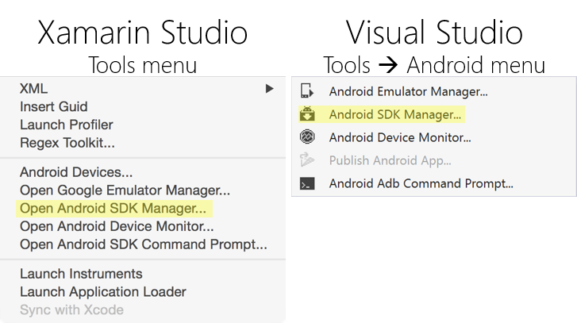
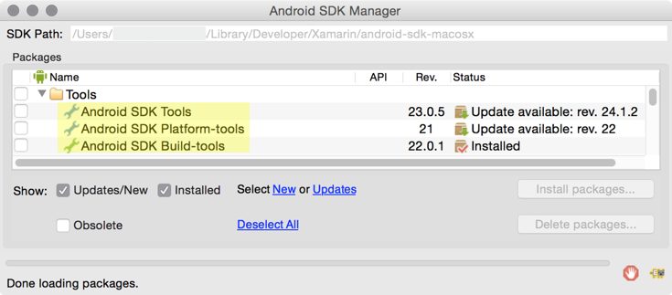
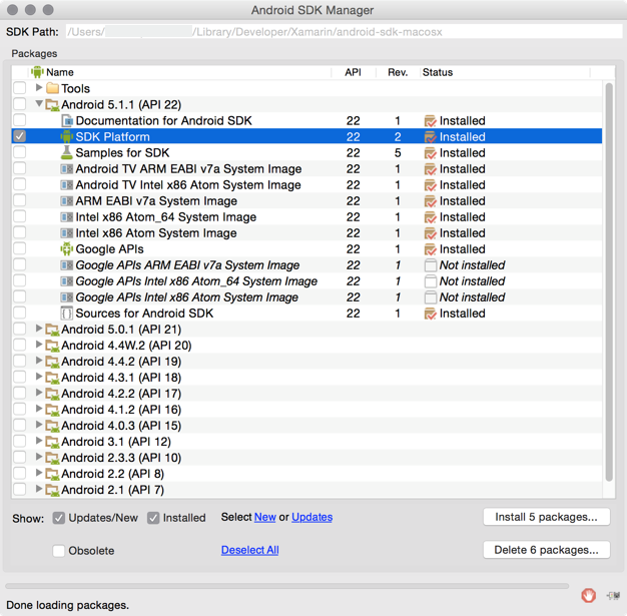

Dur??e
5 minutes
Objectifs
L'objectif de cet exercice est d'utiliser le gestionnaire de SDK Android pour installer les dernières versions.
Beaucoup des outils et APIs que vous utiliserez se mettront à jour automatiquement. Vous pourrez aussi obtenir des notificatin quand une mise à jour est disponible. ce n'est pas le cas du SDK Android. Cet exercice vous montre les étapes à suivre pour conserver votre installation à jour.
Etapes
Ci-dessous les instructions pour implémenter l'exercice.
Mettre à jour votre SDK Android
- Lancez Xamarin Studio ou Visual Studio.
- Ouvrez le Android SDK Manager. L'image ci-dessous vous montre le menu à utiliser dans votre IDE. 
- Mettez à jour les Android SDK Tools, Android SDK Platform-tools, et lesb Android SDK Build-tools vers la dernière version. L'image ci-dessous vous illustre les 3 entrées que vous devez mettre à jour. Remarquez que les versions que vous installez peuvent être plus récentes que celles affichées dans l'image. 
- Installez la dernière version de SDK Platform. L'image ci-dessous illustre un exemple. Remarquez que les versions que vous installez peuvent être plus récentes que celles affichées dans l'image. 
Résumé
Dans cet exercice, vous avez mis à jour le SDK Android. C'est quelque chose que vous devez réaliser périodiquement et manuellement. A ce jour, il n'y a pas de notifications pour les nouvelles versions disponibles et pas de système de mise à jour automatique.